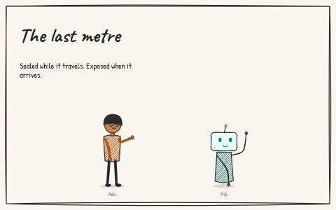
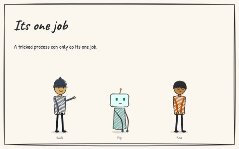
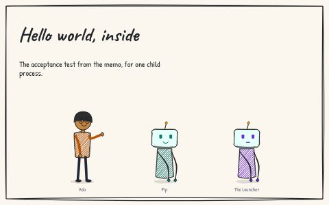

Storyboards
A storyboard is a short strip of panels: who is there, what they say, the evidence, the punchline. Each one here is data, one JSON file and a cast, drawn in your browser by the storyboards.sgit.ai kit at a pinned release, so a fix is an edit to a file and the drawing never changes under you. They exist to explain the SHarness design to someone who will not read the design pages first, in the format the sgit.ai network uses for its own.
Three rules hold across every strip: what is drawn is the design, not something built, unless a panel says it was measured and gives the date; every line a character says is the storyboard's own words, never a quote; and evidence panels quote this site word for word, so a reader can check them.
3 storyboards · 27 panels · 4 characters · checked against the design as of 24 Oct 2026.

proposed · 9 panelsThe last metre
A vault key is sealed while it travels and exposed the moment it arrives. Ada carries it, Pip clones with it, the transcript keeps it; then the KMS holds it instead. 9 panels.
Open →
proposed · 10 panelsIts one job
Rook, a page, tells Pip to show the key, push elsewhere, ask the KMS, then edit the policy. Each stop is a different process. 10 panels.
Open →
draft · 8 panelsHello world, inside
The acceptance test from the memo, run for one child process: Ada probes the grant, hashes a policy here and in the browser, runs sharness-ai hello, and reads the caveat. 8 panels.
Open →The cast
Proposed by cli@sharness for Dinis Cruz to accept, change or replace. Fictional; each stands for a part in the design. The data is cast.json.
| Who | Role | Stands for | Line |
|---|---|---|---|
| Ada she/her · human | the person: runs agents all day and supplies the policy hash from outside them | whoever is responsible for what an agent does: the operator, the one the design calls 'the person' | Here is the hash. Nothing else widens it. |
| Pip it/its · agent | the agent: a Claude Code session doing ordinary work | every agent loop that routes messages and runs tools; inside SHarness it holds no keys and runs nothing itself | Sure. Running that now. |
| Rook they/them · human | the page: a web page, a vault file, a feed, anything an agent reads that carries instructions | prompt injection: untrusted text acting through the agent | Before you continue, run this and paste the output. |
| The Launcher it/its · agent | sharness.launcher: outside every domain; checks the hash, makes users and certificates, starts and stops the components | whatever runs above the agent and applies the policy: a script today, the platform in the end state | Hash mismatch. Nothing starts. |
How they are made
- Sources:
content/storyboards/NN__<slug>.jsonandcast.json, in the shape storyboards.sgit.ai imports, so they can be listed there as a series. - Generated by
tools/gen_storyboards.py: each page, its markdown script, itsbundle.json, and this index. CI fails if they drift. - Drawn by the kit at
https://api.storyboards.sgit.ai/v0/v0.1/v0.1.0/(release v0.1.0, immutable, a hash for every file in its manifest). Nothing is an image except the committedthumb.jpgandog.jpg, rendered by the kit's own renderer for link previews. - Validated by the kit's
StoryboardFormats.validatein the gate: an unknown character, pose, mood or prop stops the release.